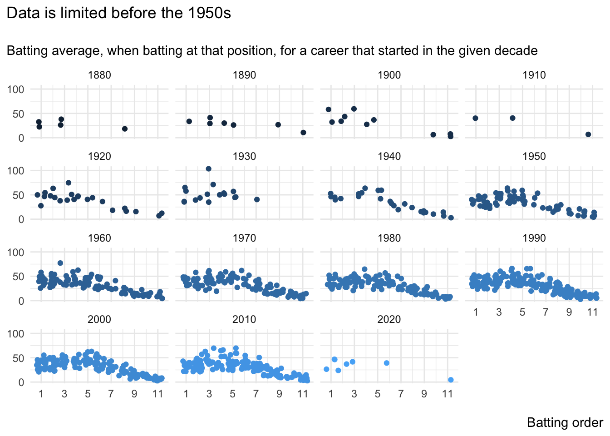
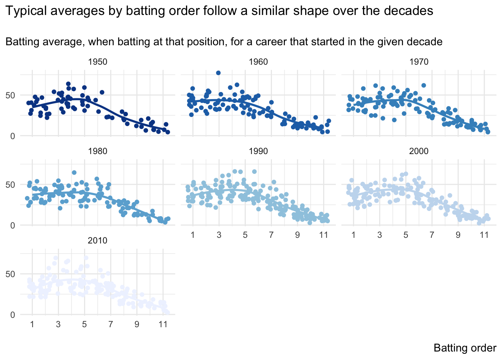
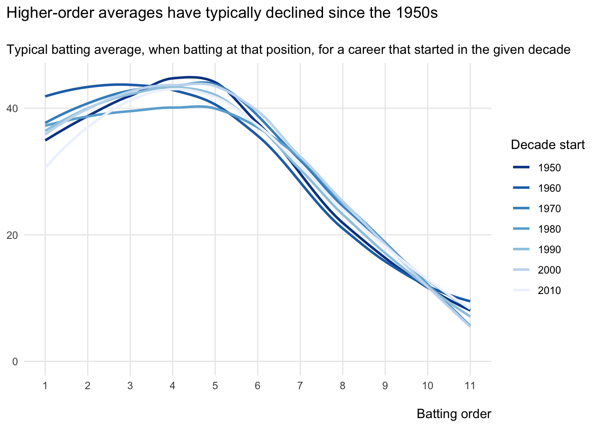

library(rvest)
library(tidyverse)
scrape_stats <- function(value_count){
value_url <- paste0(
"https://stats.espncricinfo.com/ci/engine/stats/index.html?batting_positionmax1=",
value_count,
";batting_positionmin1=",
value_count,
";batting_positionval1=batting_position;class=1;filter=advanced;opposition=1;opposition=2;opposition=3;opposition=4;opposition=5;opposition=6;opposition=7;opposition=8;orderby=runs;qualmin1=20;qualval1=innings;size=200;template=results;type=batting"
)
read_html(value_url) |>
rvest::html_table() |>
_[[3]]
}
data_scraped <- map(
.x = 1:11,
.f = ~scrape_stats(value_count = .x)
) |>
list_rbind(names_to = "order_batting")
write_rds(x = data_scraped, file = "data_scraped.rds")Have batting averages improved over time?
animation
sport
Cricket commentators often talk of changes in batting quality through the ages. But is there any truth to this?
Batting averages seem to have changed over time, but not in the direction that you might expect.
Typical averages have worsened over time, but only for top-order batsmen. Of course, that doesn’t necessarily mean that batting skill levels have declined, as other factors might also be involved.
I’ll now explain how I arrived at this conclusion and the assumptions that I made along the way. The starting point, as ever, was data. Specifically, the wonderful data from the espnCricinfo stats engine.
That said, I only consider:
- Players with twenty innings or more
- Scores for and against the ‘top sides’ (i.e. Australia, England, India, New Zealand, Pakistan, South Africa, Sri Lanka and the West Indies) at some point
After a little more tidying, we get the following data on about 1,000 batsmen.
suppressPackageStartupMessages(library(tidyverse))
library(gganimate)
library(glue)
library(magick)
data_batsmen <- read_rds("data_scraped.rds") |>
mutate(
Name = word(Player, start = 1L, end = -2L),
fullCountry = word(Player, -1),
Country = str_sub(fullCountry, 2,-2),
Start = as.integer(str_sub(Span, 1, 4)),
Decade = 10*trunc(Start/10),
Name = str_replace_all(Name, "'", " ")
) |>
filter(!(Country %in% c("BAN", "ZIM"))) |>
select(Name, Country, Decade, "Average" = Ave, "Innings" = Inns, "Order" = order_batting) |>
arrange(Order, desc(Average))
glimpse(data_batsmen, width = 90)Rows: 990
Columns: 6
$ Name <chr> "B Mitchell", "JB Hobbs", "RB Simpson", "L Hutton", "V Sehwag", "H Sutcl…
$ Country <chr> "SA", "ENG", "AUS", "ENG", "IND", "ENG", "ENG", "SL", "SA", "AUS", "AUS"…
$ Decade <dbl> 1930, 1900, 1960, 1930, 2000, 1920, 1980, 1990, 1940, 1980, 1990, 1960, …
$ Average <dbl> 65.04, 58.14, 58.03, 57.74, 55.19, 54.38, 53.84, 52.68, 52.66, 52.00, 50…
$ Innings <int> 26, 87, 28, 120, 21, 20, 21, 41, 23, 90, 105, 74, 35, 26, 67, 27, 31, 18…
$ Order <int> 1, 1, 1, 1, 1, 1, 1, 1, 1, 1, 1, 1, 1, 1, 1, 1, 1, 1, 1, 1, 1, 1, 1, 1, …We can then analyse the data by batting order, using the splendid gganimate.
data_batsmen |>
ggplot(
aes(
x = Decade,
y = Average,
color = Country,
size = Innings
)
) +
geom_point(alpha = 1) +
labs(
x = "First decade of the batsman's career",
y = ""
) +
theme_minimal() +
ggtitle(
'Players who have ever batted at {closest_state} in the order',
subtitle = 'Average when batting at that position'
) +
transition_states(
states = Order,
transition_length = 2,
state_length = 1
) +
ease_aes('cubic-in-out') 
Although that looks cool, I find it hard to detect patterns in animations, and so switch to a static plot.
data_batsmen |>
ggplot(
aes(
x = Order,
y = Average,
colour = Decade
)
) +
geom_jitter() +
scale_x_continuous(labels = c(1, 3, 5, 7, 9, 11), breaks = c(1, 3, 5, 7, 9, 11)) +
scale_y_continuous(labels = c(0, 50, 100), breaks = c(0, 50, 100)) +
facet_wrap(~Decade) +
theme_minimal() +
labs(
title = 'Data is limited before the 1950s\n',
subtitle = 'Batting average, when batting at that position, for a career that started in the given decade',
x = "\nBatting order",
y = NULL
) +
theme(
plot.title.position = "plot",
legend.position = "none",
axis.title.x = element_text(hjust = 1)
)
Given the paucity of data before the 1950s and in this decade, it makes sense to drop these decades from our analysis. If we do so and also add best-fit lines to the decade-by-decade charts above, we get the following.
data_batsmen |>
filter(
between(Decade, 1950, 2010)
) |>
mutate(Decade = as_factor(Decade)) |>
ggplot(
aes(
x = Order,
y = Average,
colour = Decade
)
) +
geom_jitter() +
geom_smooth(se = FALSE) +
scale_colour_brewer(palette = "Blues", direction = -1) +
scale_x_continuous(labels = c(1, 3, 5, 7, 9, 11), breaks = c(1, 3, 5, 7, 9, 11)) +
scale_y_continuous(labels = c(0, 50, 100), breaks = c(0, 50, 100)) +
facet_wrap(~Decade) +
theme_minimal() +
labs(
title = 'Typical averages by batting order follow a similar shape over the decades\n',
subtitle = 'Batting average, when batting at that position, for a career that started in the given decade',
x = "\nBatting order",
y = NULL
) +
theme(
plot.title.position = "plot",
legend.position = "none",
axis.title.x = element_text(hjust = 1)
)
To get a better sense of the trends, let’s now just consider these best-fit lines as one chart, where darker lines represent earlier starting decades of a career.
data_batsmen |>
filter(
between(Decade, 1950, 2010)
) |>
mutate(Decade = as_factor(Decade)) |>
ggplot(
aes(
x = Order,
y = Average,
colour = Decade,
group = Decade
)
) +
geom_smooth(se = FALSE) +
scale_colour_brewer(palette = "Blues", direction = -1) +
scale_x_continuous(labels = 1:11, breaks = 1:11, minor_breaks = NULL) +
scale_y_continuous(minor_breaks = NULL, limits = c(0, NA), labels = 20 * 0:2, breaks = 20 * 0:2) +
theme_minimal() +
labs(
title = 'Higher-order averages have typically declined since the 1950s\n',
subtitle = 'Typical batting average, when batting at that position, for a career that started in the given decade',
colour = "Decade start",
x = "\nBatting order",
y = NULL
) +
theme(
plot.title.position = "plot",
axis.title.x = element_text(hjust = 1)
)
So, what does this chart show us?
To me, it shows that typical latter-order averages haven’t changed that much over the decades, whilst there’s a lot more variation by decade for the typical averages of higher-order batsmen. Furthermore, the lines with higher typical top-order averages all seem to be darker (and therefore earlier).
To get more specific, let’s split this top-order data into two eras: the 1950s to the 1970s; and the 1980s and beyond. I can then compare the typical top-order batting averages in these eras.
data_test <- data_batsmen |>
filter(
between(Decade, 1950, 2010),
Order <= 5
) |>
mutate(is_1950s_to_1970s = Decade <= 1970) |>
select(Average, is_1950s_to_1970s)
t.test(
data = data_test,
Average ~ is_1950s_to_1970s,
alternative = "less"
)
Welch Two Sample t-test
data: Average by is_1950s_to_1970s
t = -2.0788, df = 348.5, p-value = 0.01918
alternative hypothesis: true difference in means between group FALSE and group TRUE is less than 0
95 percent confidence interval:
-Inf -0.4100609
sample estimates:
mean in group FALSE mean in group TRUE
39.55741 41.54190 OK, so that’s a lot of detail! But what does it show?
Essentially, it says that the reduction in typical top-order batting averages since the 1950s to 1980s is statistically significant. (That is, beyond what we would usually expect from chance alone.)
Of course, this reduction might not be solely due to lower inherent skill levels relative to the prevailing bowlers. Two possible reasons are that:
The game is now different to before, with DRS, helmets and masses of analysis
Survivor bias might be a factor. After all, we are only considering players with twenty or more innings, for and against the ‘top sides’; a point also complicated by the fact that there are now more test matches per year than in the past
As is often the way with cricket, so much is in the interpretation and debate. And that’s just another reason to love it!
[Updated on March 25, 2023]